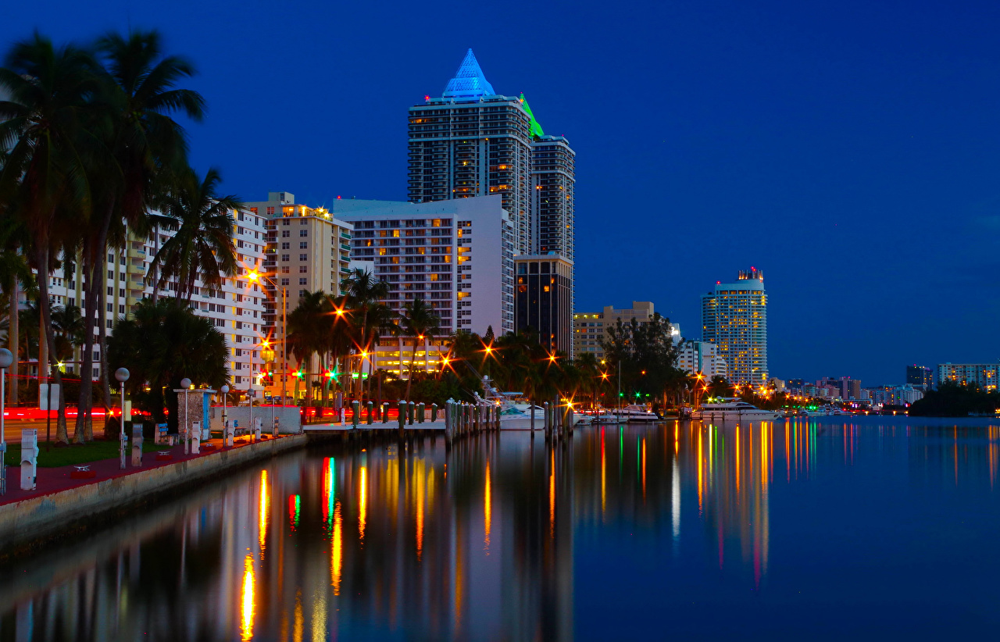

Tamia Mc Kenna
.jpg)
Which City
City of Miami
Miami is a coastal metropolis located in southeastern Florida,United States. I have always wanted to go to Miami because of how vibrant the city is, and the different people in it. The different cultures all together. The nightlife of Miami also intrigued me, so full of colours and activity. Miami has always been a place I want to visit since I’ve seen it on TV. There are so many opportunities there and that’s exciting. It’s on the coast so they’ve also got a great beach too.
Foreign Language
The foreign language that I want to learn is Spanish. I’ve always been interested in this language, I think it’s a sexy language and a love language. And I just a feel a connection with this language like no other. I’ve started to learn it but I haven’t made more time to practice it.
| English | Spanish |
|---|---|
| Good morning | Buenos días |
| How are you? | ¿Cómo estás? |
| What’s your name? | ¿Cómo te llamas? |
| I love you | Te amo/ te quiero |
| Goodbye | Adiós |
Historical Places
.jpeg)
St. George's Cathedral
Also known as the “People’s Cathedral”, St. George’s Cathedral is the oldest standing cathedral in Southern Africa, having been built over 100 years ago.
The bells in the belltower each have their own indivdual names, respectively, Joy, Love, Peace, Faith, Charity, Service, Patience, Sacrifice, Redemption, and Good Hope. The largest bell weighing at 1300 kg is the Good Hope.
The Labyrinth is an ancient meditation tool, which is available to all, regardless of your religious persuasion. The St. George's Cathedral Labyrinth is a paved, medi Chartres replica, located in the Cathedral's courtyard.
.jpeg)
Iziko Slave Lodge
The Slave Lodge is one of the oldest buildings in Cape Town. The building has answered to many names in the last three centuries, namely; Slave Lodge, Government Offices Building, Old Supreme Court, and SA Cultural History Museum.
In 1998 this museum was renamed the Slave Lodge. Under the umbrella theme, ‘From human wrongs to human rights”. Exhibitions on the lower level of this museum explore the long history of slavery in South Africa.
The Slave Lodge was built in 1679, making it the second oldest existing colonial structure of the Cape Colony, today known as Cape Town.
Parliament of South Africa
The Houses of Parliament of South Africa are situated in Cape Town. The building consists of three main sections: the original building, completed in 1884, and additions constructed in the 1920s and 1980s.
Queen Victoria granted permission for the establishment of a parliament in the Cape Colony in 1853.
In the 1920s, Parliament commissioned Sir Herbert Baker to build an extension to the building, including a new chamber for the House of Assembly. The old Assembly chamber became the Parliamentary Dining Room. A further extension was created in the 1980s.